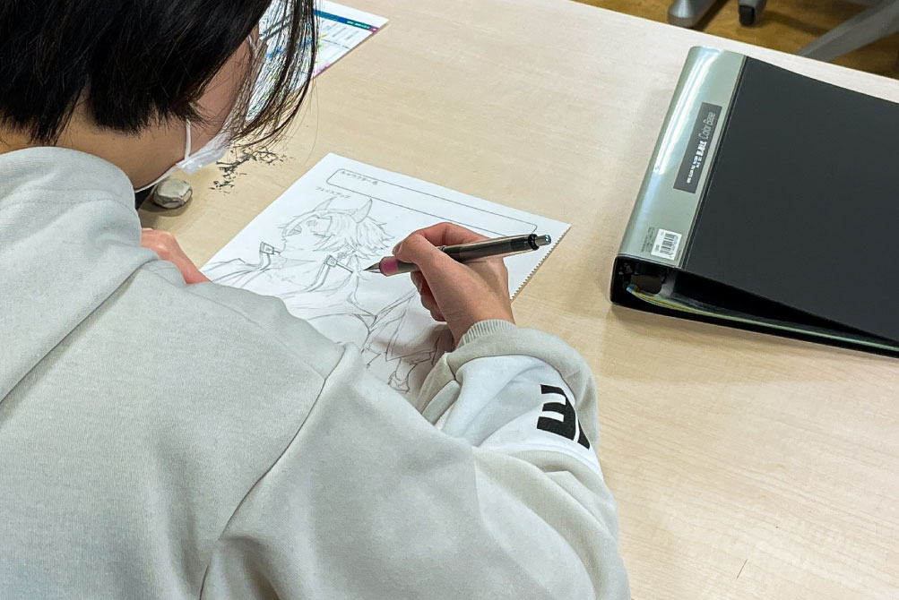

アニメ・マンガ科
- アニメーションコース／マンガコース
- イラストレーションコース／大学コース
-
アニメ・マンガの
さまざまな可能性に挑戦し
世界中の人々を魅了する作品をつくる - 娯楽のためのアニメ・マンガという位置づけにこだわらず、アニメ・マンガのもつ「人に分かりやすく伝えるコンテンツ」としての特長を活かして、地域社会の課題やSDGsなど地球規模の難解な問題を人々に提起する奥の深い作品づくりに挑戦します。
学びPICK UP!
第20回 高校生イラストコンテスト開催！
【第20回 高校生イラストコンテスト 概要】 「みんなの未来、みせてください」 輝く未来に！5年後の未来に！ というワクワクをイラストで実現させるイベントです。 第20回高校生イラストコンテストでは高校生か...
続きを読む- 【目指せる職種】
- プロデューサー／ディレクター／作画スタッフ（アニメーター）／美術（背景）スタッフ／仕上スタッフ／制作進行スタッフ／撮影スタッフ／キャラクターデザイナー／イラストレーター／漫画家／漫画アシスタント／漫画原作家／漫画編集者／絵本作家／似顔絵絵師／ゲームグラフィックデザイナー／デザイナー／ゲーム制作会社／アニメーション背景制作会社 他
- 【主な就職先】
- （株）テレコム・アニメーションフィルム／（株）スタジオよんどしい／東映アニメーション（株）／（株）マッドハウス／（株）プロダクション・アイジー／ユーフォーテーブル（有）／（株）ゴンゾ／プラチナビジョン（株）／（株）SILVER LINK.／（株）ぎゃろっぷ／（有）Wish／（有）スタジオエル／（有）ダンガン・ピクチャーズ／（株）アートムーブ／（有）卯の字屋／（株）キャメルスタジオ／（株）ポパル／（株）ライデンフィルム／（株）ローヤル企画／（株）メディア22世紀／（株）フェローズ 他
- 【卒業生掲載作品・参加作品】
- ルパン三世／orange／講談社 少年マガジンエッジ 「左手のための二重奏」松岡健太╱スクウェア・エニックス ヤングガンガン 「EAR’S GIFT みみかき先生」九月タカアキ╱ 集英社 となりのヤングジャンプ 「転生ゴブリンだけど質問ある?」漫画：荒木宰（原作：三木なずな）／第9回千修イラストレーションコンテスト 最優秀賞 野坂奈々╱ 第4回中野マンガアート・フォトコンテスト イラスト部門：最優秀賞 廣瀬晴香 イラスト部門：入選 紅豆井 他
コース紹介
アニメーションコース
実際の「アニメーション」制作会社の教育プログラムを使用し、レイアウト、原画動画といったアニメーションの作画から、デジタルペイントによる仕上、撮影まで本格的な技術指導を行います。絵を描く上で欠かせないデッサンなど基礎から学ぶことができます。
マンガコース
現役編集者による品評や出版社への持ち込み、応募も積極的に応援。在学中からデビューや就職をめざします。
イラストレーションコース
幅広い技術と表現力を武器に多彩な分野で活躍するイラストレーターをめざします。学院祭や外部イベントなどで評価される経験を積み「売れる」作品作りのための企画力も磨きます。
大学コース
「幅広い知見を得て、作品の幅を広げたい！」「海外のトレンドを学びたい！」そんな皆さんの憧れを叶えるために、テクノスの「知識・技術の専門性」と大学の「幅広い学問と教養」を学修します。
もっと大学コースを知りたい方はコチラ学びの特徴
未来を見据えた
学科オリジナルの学び
海外姉妹校の学生たちと
国を超えて繋がり
アニメーションを制作
海外姉妹校であるニューヨーク州立大学パーチェス校と、音響芸術科と協働でアニメーションを制作しています。東京とニューヨークをオンラインで繋ぎ、世界に求められる作品を探究しています。
近隣のB級グルメを擬人漫画化!
地域のグルメを世界に発信し
その魅力を広める
飲食店のB級グルメを擬人化したマンガを制作。店主に取材をし、打ち合わせを重ねてマンガの完成を目指します。完成したマンガはSNSで発信。お店の魅力を海外の方にも知ってもらえるように翻訳まで行います。
身につけたスキルを
実践する学科ゼミ
基礎ゼミ
アニメで納得SDGs
CGクリエーター科とコラボしながらSDGsをテーマにしたアニメーション制作を行います。この作品を通して視聴者の60%以上の方に興味を持ってもらうことを目標とします。
応用ゼミ
アニメ・マンガで地方創生
アニメ・マンガで、企業や地域(小金井市、国分寺市)の魅力を引き出すPRをおこないます。CGや効果音、音楽、ナレーションを駆使しながら他学科の学生達と協働してつくり公開。作品を公開後は市民アンケートを取り、認知度の調査まで行います。
発展ゼミ
アニメーションコース
世界中にファンができる
アニメーション
数多くの役割をまとめるプロデューサーなど実際のアニメ制作と同じように、役割やポジションを振り分けながら海外姉妹校の学生たちとともに制作チームをつくります。日本だけでなく世界の文化を取り入れながら作品をつくり、完成した作品はYouTubeにアップ。目標はチャンネル登録者数10万人＆再生回数100万回を目指します。
マンガコース／イラストレーションコース
世界の心を動かす
イラストレーション、アニメーション
日本国内だけでは無く、世界でも理解と注目されるアニメーションやイラストレーションとはなにかを、プロデューサー目線で捉え、実制作に挑む。SNS等で作品を発表。国内、海外のコンテストに出品することで賞金を狙う
身につける力&磨く力

人と協働する力
商業ベースのアニメーション、マンガ制作は1人では完成しません。そのためコミュニケーションを円滑におこなえ、お互いが尊敬し合う仕事方法が求められます。

マネジメント能力
複数名で効率良く、なおかつ的確に仕事をこなさないと締切までに作品が納品できないため、作品全体の進行度を徹底管理する力が求められます。

プロデュース力
作品を制作するだけでなく、ヒットさせる戦略的な思考やニーズの把握をし、様々な分野に目を配れる制作者が、業界があらゆる異業種と繋がるキーになります。
在学生レポート
在学生のキャンパスライフを覗いてみよう
学び最新TOPICS
一覧へ描けるキャリア
卒業後の自分をイメージして、
描きたいキャリアを実現しよう!
「卒後ビジョン」で未来を描き、
夢や目標に向けて学ぶのが、テクノスの学修スタイル。
5年後の「自分のありたい姿」を明確にすることで、
今の自分に必要な力がわかり、
学びのプランを立てやすくなります。
在学生の描いた卒後ビジョンを
自分の「卒後ビジョン」を描くことで、
奨学金にチャレンジできる入学方法＆試験
-
Technos
オーディション入学「卒後ビジョン」を用いたプレゼンテーション型の入学方法。評価に応じて「1年次の学費全額免除」等の支援が受けられます。
Technosオーディション
入学の詳細はコチラ -
特待生試験
「卒後ビジョン」を描くことで、どの入学方法を選択した方でも挑戦可能。評価に応じて、学費負担が軽減されます。
特待生試験の
詳細はコチラ
学生や教員と一緒に描く！ オープンキャンパスの
詳細はコチラ
卒業生レポート
社会で活躍する卒業生のキャリアを知ろう
学びを体験できる
オープンキャンパス
業界・学科
体験メニュー
-
AI搭載のデジタルツールでオリジナルキャラクターをつくろう！
AI搭載のデジタルツールで描きたい絵を理想に近づける事ができる時代。最先端のAI技術を使って神絵師を目指そう！
-
先取りポートフォリオ制作
 入学前から、就職活動で使用する作品集「ポートフォリオ」の制作をおこない、満足のいく就職に向け一歩前身しよう。
よくある質問
学科Q&A
高校生からの質問
- マンガコースとイラストレーションコースの違いを教えてください。
-
マンガコースはコマ割りを基本としたストーリー性のある絵を学び、イラストレーションコースはキャラクターやポスターなどを基本とした絵を学びます。
- 就職はできますか。またどんな就職先がありますか。
-
マンガコースはマンガ家のアシスタントとしてスタートする場合、または出版社への持ち込みから作品を発表できる場合があり、個人事業主が基本です。イラストレーションコースはイラスト専門の企業やイラスト部門を持つ企業への就職となります。
- 絵が下手でも授業についていけますか。
-
大丈夫です。授業をしっかりと受けて、予習、復習を欠かさないように心がければ絵の技術は向上します。
- 将来ゲームのキャラクターデザインの職種に就きたいです。ゲーム会社にも就職できますか。
- もちろん可能です。ただし、人気の職種のため、人一倍の画力とコミュニケーション力が必要です。
- 高校生のときにはどんなことをしておけばよいのでしょうか。
- 小説を読んだり、邦画、洋画を問わず実写映画をたくさん観てください。また、舞台や美術館、動物園などにも足を運ぶことが重要です。パソコンやスマートフォンだけで情報に触れるのではなく、自分の目で確かめることを心掛けてください。
保護者からの質問
- 就職、所属、デビューした後は1人で食べていけますか。
-
卒業後1年目で、すぐに豊かな生活が送れる給与を得られる場合は少ないです。ただし仕事量と実績、信頼を積み重ねれば年齢に関係無く給与が大きく得られる職種です。
- マンガとアニメのコンテンツの違いがわかりません。
-
マンガは読者が自分のペースで読み進められる作品で、アニメーションは映像表現として一定の時間内でストーリーが進んでいく作品です。
- 絵の技術以外で必要なスキルはありますか。
- 制作者同士のコミュニケーション能力が求められます。また、仕事が締切に間に合わなければ作品を掲載してもらえません。そのためにはスケジュール管理や体調管理も必要なスキルです。
- 定期的なテストはありますか。卒業できるのか不安です。
- テストはございません。ただし各科目毎の課題や作品提出があります。また、進級や卒業の判定は、成績と出席時間で決まります。最低でも課題を提出し、遅刻、欠席がないよう授業を受講することが大切です。
- 資格は必要でしょうか。在学中にどのような資格が取得できますか。
- マンガ家、イラストレーターには特定の資格は必要ありません。ただし、社会人としての基礎力と一般常識を身につけてもらうために1年次にマナー・プロトコール3級の試験を学生全員が受験します。また希望者は色彩検定などにもチャレンジできます。